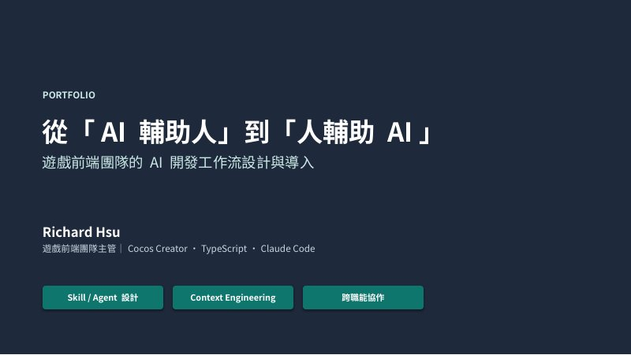
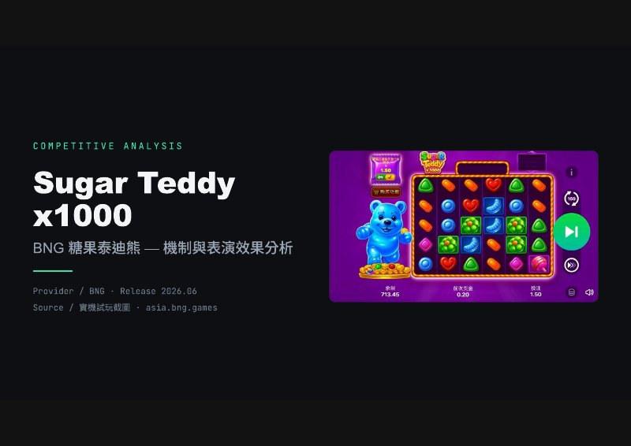

核心優勢
- 帶領 6 人 H5 遊戲開發團隊｜升任部長後交付 3 個專案，其中 2 款上線星城 Web；負責排程、技術決策、績效與招募
- 建立團隊標準 AI 工作流程｜2 個 Skill ＋ 4 個 Agent，涵蓋開發 → Review → Commit → 知識沉澱，6 人團隊全數採用
- 自動化與架構提效｜Jenkins + Python 版本產出時間減少 70% 以上；SLOT 公版單款串接 3 天 → 1 天以內
- 線上品質與風險控管｜白名單先行測試、熱更新／回滾、雙平台上架；首屏載入 10 秒 → 7 秒
- 9 年遊戲前端實務經驗（2016 起）｜Cocos2d-x 至 Cocos Creator，跨 Android／iOS／H5；網銀任內完成 11 款 H5 遊戲（SLOT 8 款，魚機、押分機、麻將各 1 款）
AI 導入成果
從「AI 輔助人」到「人輔助 AI」：把團隊開發經驗封裝成 AI 可重複執行的標準流程，AI 負責撰寫與初審，人負責定規格與把關。從 GitHub Copilot Agent 到 Claude Code，6 人團隊全數納入日常開發。
成果：建立團隊標準 AI 工作流程
- 2個團隊 Skill
開發／審查 - 4個專責 Agent
撰寫、IDE 操作、審查、Commit - 4個流程階段
開發 → Review → Commit → 知識沉澱 - 6 / 6團隊成員
全數採用
整套流程與規範和遊戲專案的程式碼放在一起管理：新成員下載專案並完成簡單設定後，即可使用和全團隊相同的開發流程；規範有更新時，成員只要更新專案就能取得最新版本，不需要再個別口頭傳達。
- 一鍵 Code Review一個指令完成 Review → Commit，審查品質一致
- 每日自動審查問題自動通知作者，不必等人工發現
- 規格驅動開發（SDD, Spec-Driven Development）先定規格、經人確認後 AI 才動手，依驗收條件驗收
- AI 操作遊戲編輯器透過 MCP 直接編輯 Cocos Creator 場景與 Prefab
- 開發知識沉澱開發決策寫成文件，下次開發自動引用
- 企劃參與開發企劃用 AI 在分支上開發，不影響主線
- 單一資訊來源專案資訊集中在 README，新人看文件就能上手
實作細節（/ts-review、/cocos-develop、SubAgent 與 Context Engineering 設計）請見作品區「AI 工作流作品集」。
技術主管經驗
團隊管理
- 團隊交付升任部長後交付 3 個專案，2 款上線星城 Web
- 排程與人力調度工時評估、交付承諾、跨專案分配
- 招募與績效技術面試、人選評估、一對一回饋
- 新人培育上手流程、教學文件與技術輔導
技術治理
- AI Workflow for Team建立團隊標準 AI 工作流程，6 人全數採用
- 開發標準TypeScript 規範、Code Review 清單、架構原則
- SLOT 公版產線單款串接 3 天 → 1 天以內，公版只需改一處
- 引擎升級主導 Cocos Creator 2.x → 3.x 升級與風險評估
品質與線上風險管理
- 白名單先行測試小範圍驗證後再全量發布
- Hotfix 決策判斷修復方式與時機，經熱更新快速修正
- 版本回滾回滾與強制更新機制
- 事後檢討根因回饋到開發流程與自動化檢查
跨部門協作與技術推廣
- 協作對象企劃、Server、美術動畫、QA、營運
- 跨部門自動化協助 QA 整合 GitLab Issue × Google Sheet
- 技術推廣導入 AI Agent、Jenkins CI/CD、公版架構並對內分享
- 競品分析拆解海外 SLOT 的體驗與演出節奏
經歷
網銀國際（台北分公司）
2024.04 – 現在H5 遊戲開發處／開發一部部長
- AI 開發導入導入 AI Coding Agent 與「人輔助 AI」工作流，建立團隊與跨職能協作規範
- 跨部門自動化協助 QA 建立 GitLab Issue × Google Sheet 整合流程
- 啪麻雀1月 麻將 H5 上線星城 Web
- 神話魚機（冥王）9月 H5 魚機上線星城 Web（1月起帶領團隊製作）
- 麻將之星改版帶領團隊完成改版
12月 升任 H5 遊戲開發處／開發一部部長
- 接手團隊負責 6 人團隊的排程、技術決策與技術輔導
- 專案推進麻將 H5 製作與「麻將之星」改版
- CI/CD 整合以 Python + Jenkinsfile 整合自動化指令流程
- 賓果行星6月 完成押分機 H5
4月 加入網銀國際，擔任 Cocos Creator SLOT 前端主要負責人
- SLOT 開發流程從無到有建置 Cocos Creator SLOT 流程，並持續優化效能
- 開發標準制定標準與流程，協助成員解決技術問題
- CI/CD整合 Jenkins 內部開發流程
- Server 串接與 Server 端整合封包
- H5 SLOT主責完成 8 款，含宙斯之力、魔法師梅林
職涯轉換期
2023.03 – 2024.033月 因家庭因素暫離職場，期間持續技術投入
- Golang自學完成訂房系統 Server 與 Client
- Swift自學 Swift 與 SwiftUI
鈊象電子
2016 – 2023.03麻辣娛樂城平台 Client（Cocos Creator）
- 引擎升級主導 Cocos Creator 2.0 升級至 3.0
- 編譯自動化建置 Android、iOS 專案與平台編譯自動化流程
- 熱更新建置熱更新與強制更新流程
- 第三方 SDKiOS 儲值、Firebase、AppsFlyer、Line／Facebook／Apple 登入
- 雙平台上架負責 Google Play 與 App Store 上架
FHM 遊戲平台 Client 持續開發與維護（Cocos2d-x）
- 平台迭代功能迭代開發與線上問題排除
- 移植與維運Android／iOS 遊戲移植與版本產出
- 自動化持續維護並擴充 Jenkins + Python 流程
FHM 遊戲平台 Client（Cocos2d-x）
- 更新機制改造結合 Jenkins 與 Python 優化製程，提高更新速度
- 轉化流程遊戲 APP 轉化流程優化
- 移植與開發遊戲移植與平台功能開發、維護
- 專案遷移Android 專案從 Eclipse 遷移至 Android Studio，完成第三方套件整合
iRich 遊戲平台 Client（Cocos2d-x）
- 更新機制更新機制優化
iRich 遊戲平台 Client（Cocos2d-x）
- 前端遊戲工程師遊戲移植與平台功能開發、維護
進入鈊象電子擔任前端工程師
- SDK 開發線上平台共用工具（SDK）開發
作品

AI 工作流作品集
從「AI 輔助人」到「人輔助 AI」：遊戲前端團隊的 AI 開發工作流設計與導入（經驗 Skill 化／人輔助 AI 開發／跨職能協作）

Cocos Creator 自動化建置流程
Cocos Creator × Jenkins × Python 自動化建置

SLOT 競品分析報告
海外 SLOT 產品的遊戲體驗分析文件
團隊導入 AI Coding Agent 的規範、Agent 設定與實作經驗整理
使用 Jenkins 完成遊戲自動化建置的內部分享
透過 Log 追蹤使用者行為，分析並調校產品轉化率
- 前端遊戲開發、遊戲引擎開發
- Android、iOS、H5 三版本產出
- 自動化遊戲版本產出機制
- 串接 iOS 原生支付 SDK
自製 Cocos Creator 編輯器擴充工具，用於編輯魚群移動路徑
自學 Golang 完成的訂房系統後端
開發工具
AI 開發：Claude（Agent、Skill、MCP 設定）／GitHub Copilot Agent
版控與協作：Git／GitLab／Jenkins CI-CD／VS Code
程式技能
-
主力
Claude Code / AI Agent 開發
自訂 Agent 與 Skill／MCP 整合／團隊 AI 開發規範制定
-
主力
TypeScript / JavaScript
Cocos Creator 主要開發語言／架構設計與規範制定
-
主力
Python
Jenkins 自動化工具鏈／版本比對打包／跨系統整合
-
熟練
C++ / Lua / Objective-C / Java
Cocos2d-x 引擎與平台功能封裝／iOS、Android 原生層與第三方 SDK 串接
-
具備經驗
Golang / Swift & SwiftUI / SQL
自學完成訂房系統 Go Server 與 Client
學歷
明新科技大學｜電子工程系
- 主修計算機領域，畢業專題負責程式開發